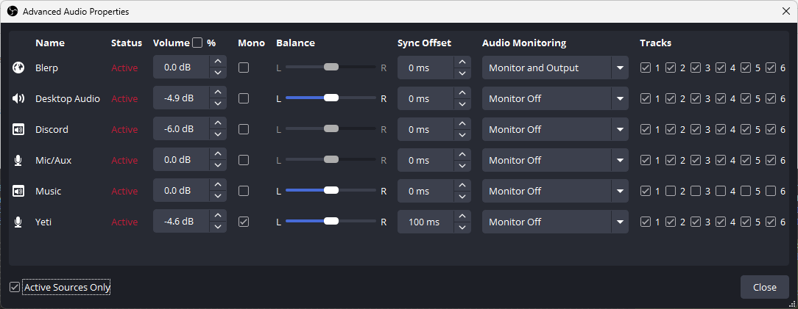

Application and stream configuration
Loading connection info...
Multi-track audio requires SRT input. Configure two audio tracks in OBS so music is separated from the clean mix.
Advanced
1

Example: Music is assigned to Track 1 only. All other sources use both Track 1 and Track 2.
AAC (not Opus) so copy mode works without transcoding
twitchVodTrack: 2
vodOnly: true
(no setting)
recording